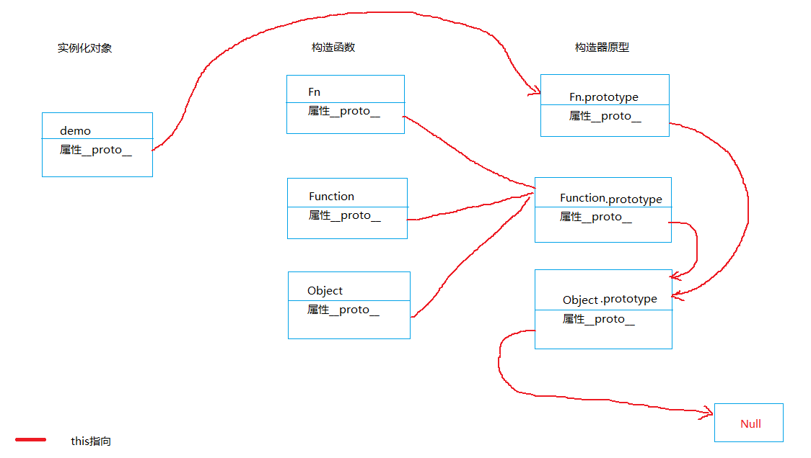
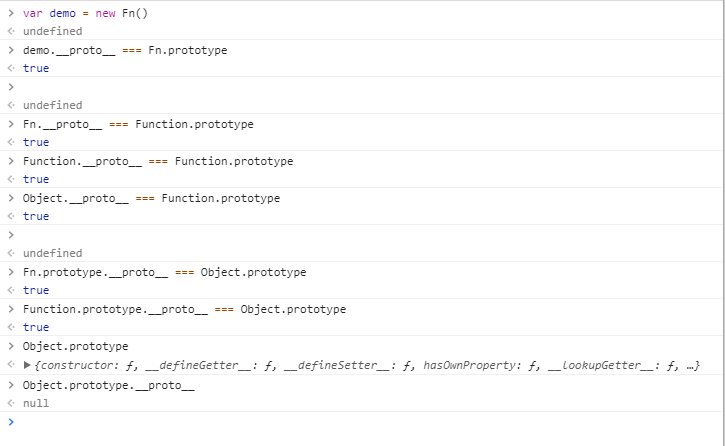
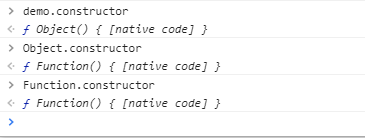

总结：对象的__proto__属性指向其构造函数的原型；由此对象可访问构造函数原型上的方法；
是的！你没看错，一上来就总结~后面的其实都不用看了~
网上常见的javascript原型链描述图
高能预警 ////// 非战斗人员赶紧撤离
是的，这就是javascript所谓的原型链...接下来我们用代码来验证一下
这么来看，上图的指向倒是没有什么问题，但是Object和Function它俩到底是咋回事...
依照开篇第一句话的总结，Object对象应该是Function的实例才对
鲁迅有句话说过~实践是检验真理的唯一标准~~~欧了...
这么一来，看来确实是这么一回事...
总结：对象的__proto__属性指向其构造函数的原型；由此对象可访问构造函数原型上的方法；
完结！撒花~~~
some Question：
自己给自己说明下吧~别到时候自己都忘了~那就熄火了
第一： 构造器原型对于实例化对象来说是共享的，只要修改构造器原型，所有实例化对象的相关参数均回改变；
第二： 实例化对象在进行属性查找伙食方法调用时，首先查找的是自身属性以及方法（也就是构造器的属性和方法，当然各个实例化对象也可自行修改自身属性以及方法，包括增删改，不会影响其它势力实例对象以及原构造器），
之后才会去构造器原型中查找
so...test one修改了构造器原型，所以所有的实例化对象均受到波及；test two仅仅只是修改实例自身的属性而已（同样的属性和方法，实例自身会屏蔽构造器原型的同名属性和方法，但是可以查看到__proto__）；